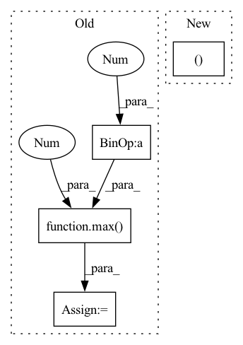

Pattern ID :38412

Before Change
df_train (pd.DataFrame): training data
df_val (pd.DataFrame): validation data
n_samples = len(df) - n_lags + 2 - (2 * n_forecasts)
n_samples = n_samples if inputs_overbleed else n_samples - n_lags
if 0.0 < valid_p < 1.0:
n_valid = max(1, int(n_samples * valid_p))
else:
assert valid_p >= 1
assert type(valid_p) == int
n_valid = valid_p
After Change
threshold_time_stamp = find_time_threshold(df_list, n_lags, valid_p, inputs_overbleed)
df_train, df_val = split_considering_timestamp(df_list, threshold_time_stamp)
else:
df_train, df_val = single_split_df(df, n_lags, n_forecasts, valid_p, inputs_overbleed)
return df_train, df_val
In pattern: SUPERPATTERN
Frequency: 3
Non-data size: 4
Instances
Fragment ID: 109731098
Project Name: ourownstory/neural_prophet
Commit Name: d07b79568ef37904de81ba00248764233fbaa8c8
Time: 2021-10-07
Author: ourownstory@users.noreply.github.com
File Name: neuralprophet/df_utils.py
M Class Name: AnonimousClass
N Class Name: AnonimousClass
M Method Name: split_df(6)
N Method Name: split_df(5)
M Parent Class:
N Parent Class:
M File Name: neuralprophet/df_utils.py
N File Name: neuralprophet/df_utils.py
M Start Line: 297
M End Line: 312
N Start Line: 506
N End Line: 539
'>
Before Change
length = resp.getheader("content-length")
if length:
length = int(length)
blocksize = max(4096, length // 100)
else:
blocksize = 1000000 // just made something up
buf = io.BytesIO()
After Change
print(f"Dataset already downloaded at {file_name}.")
else:
opener = urllib.request.build_opener()
opener.addheaders = [("User-agent", "Wget/1.20.3 (linux-gnu)")]
urllib.request.install_opener(opener)
urllib.request.urlretrieve(url, file_name, ProgressBar().update)
'>
Fragment ID: 109731099
Project Name: continvvm/continuum
Commit Name: 21c44f320830e89c7754209a9c98affafb0932c8
Time: 2020-06-17
Author: ar.douillard@gmail.com
File Name: continuum/download.py
M Class Name: AnonimousClass
N Class Name: AnonimousClass
M Method Name: download(2)
N Method Name: download(3)
M Parent Class:
N Parent Class:
M File Name: continuum/download.py
N File Name: continuum/download.py
M Start Line: 6
M End Line: 36
N Start Line: 7
N End Line: 17
'>
Before Change
def _build_drift_plot(self, score):
Build traffic light drift plot.
stop = max(0.4, score + 0.1)
drift = drift_score_bar_traces(score)
drift_plot = go.Figure(layout=dict(
After Change
def _build_drift_plot(self, score):
Build traffic light drift plot.
bar_traces, x_axis, y_axis = drift_score_bar_traces(score)
x_axis["title"] = "Drift score"
drift_plot = go.Figure(layout=dict(
title="Drift Score - Whole Dataset Total",
'>
Fragment ID: 109731097
Project Name: deepchecks/deepchecks
Commit Name: bf172a01d8d4aba753a9fc7f5135c130f4daebaa
Time: 2022-01-19
Author: matan@deepchecks.com
File Name: deepchecks/checks/distribution/whole_dataset_drift.py
M Class Name: WholeDatasetDrift
N Class Name: WholeDatasetDrift
M Method Name: _build_drift_plot(2)
N Method Name: _build_drift_plot(2)
M Parent Class: TrainTestBaseCheck
N Parent Class: TrainTestBaseCheck
M File Name: deepchecks/checks/distribution/whole_dataset_drift.py
N File Name: deepchecks/checks/distribution/whole_dataset_drift.py
M Start Line: 191
M End Line: 193
N Start Line: 191
N End Line: 192